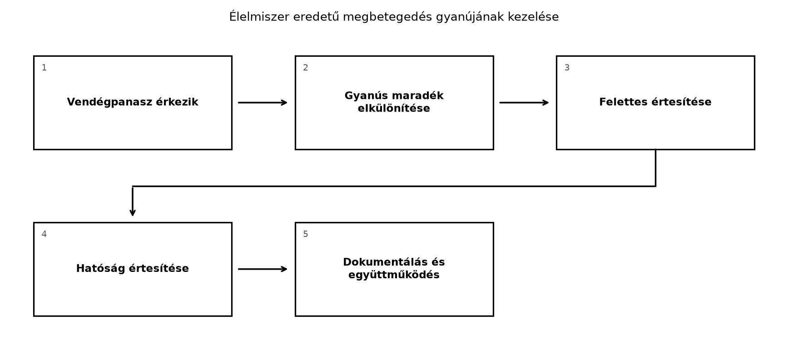

Egy cukrászda vasárnap délután esküvői tortát szállít ki. Hétfőn telefonál a nászasszony: többen rosszul lettek, hasmenésük és hányásuk van. A műhelyben azonnal felmerül a kérdés: mi okozhatta? A krémet nem hűtötték elég gyorsan? Egy dolgozó betegen dolgozott? A tojásos krém nem forrt eléggé? Ha nem tudjuk, mi a különbség ételmérgezés és ételfertőzés között, nem tudjuk kideríteni, mit rontottunk el, és nem tudjuk megvédeni sem a vendéget, sem az üzemet.
Tegyük fel, hogy egy vendég megeszik egy krémes süteményt. A tünetek megjelenésének ideje sokat elárul arról, milyen kockázattal állunk szemben. Ha fél órán belül hányás jelentkezik, inkább már kész toxinra gondolunk. Ha másnap láz és hasmenés jön, inkább élő kórokozó fertőzhette meg. Ez az időbeli sorrend a cukrász hibaelemzés első kulcsa.

A fenti ábra nem diagnózis, hanem a teendők sorrendjét mutatja. Cukrászként nem a mi feladatunk a kórokozó azonosítása, de a helyes lépések ismerete életmentő lehet.
Definíció. Ételmérgezés (intoxicatio). Olyan élelmiszer eredetű megbetegedés, amelyet az élelmiszerben korábban képződött méreganyag – toxin – okoz. A toxin a kórokozó elpusztulása után is az ételben maradhat, és sok esetben hőálló. Ezért a hőkezelés utáni szennyeződés különösen veszélyes.
Definíció. Ételfertőzés (infectio). Olyan élelmiszer eredetű megbetegedés, amelyet az élelmiszerrel bevitt élő kórokozó okoz. A kórokozó a bélrendszerben szaporodik, és maga váltja ki a tüneteket. A tünetek jellemzően később jelentkeznek, mint a toxin okozta mérgezésnél.
Vannak átmeneti formák is, amelyeket toxikoinfekciónak nevezünk. Ilyenkor az élő baktérium a bélben szaporodva termel toxint. A cukrászatban a leggyakoribb kockázatokat mégis a fenti két csoport köré érdemes rendezni.
Szabály. Cukrászüzemben mindig úgy kell dolgozni, hogy se élő kórokozó, se toxin ne kerüljön az élelmiszerbe. Ezt hőkezeléssel, gyors hűtéssel, hűtve tárolással, személyi higiéniával és a nyersanyagok ellenőrzésével érjük el. A beszállított nyersanyagoknak nyomon követhetőnek kell lenniük, és a gyanús tételt el kell különíteni.
Az alábbi táblázat csupán tanulási áttekintés. A lappangási idők tájékoztató jellegűek, és az egészségi állapottól, valamint a kórokozó mennyiségétől függően tág határok között mozognak.
| Kórokozó | Típus | Jellemző élelmiszer a cukrászatban | Lappangási idő (tájékoztató) | Fő tünetek | Kiemelt megelőzés |
|---|---|---|---|---|---|
| Salmonella | ételfertőzés | nyers tojás, hőkezeletlen tojásos krém, tiramisu | 6–72 óra | láz, hasmenés, hasi görcs | tojás hőkezelése, pasztőrözött tojástermék |
| Staphylococcus aureus | ételmérgezés (hőstabil toxin) | kézről szennyezett krém, tejszínhab, töltelék | 30 perc – 6 óra | hányás, hasmenés, görcs, láz nélkül | sebek, bőrgyulladás kizárása, kesztyű, hűtés |
| Bacillus cereus | ételmérgezés (két toxin) | rizstej, keményítős krém, főzött tésztaféle hosszan melegen | 1–6 óra (hánytató), 8–16 óra (hasmenéses) | hányás vagy hasmenés | gyors hűtés, melegen tartás elkerülése |
| Listeria monocytogenes | ételfertőzés | nyers tej, hűtött tejszínes készítmény, hosszan tárolt desszert | 1–4 hét, akár 70 nap | láz, izomfájdalom, hasmenés; terheseknél vetélés | nyers tej kerülése, hűtési lánc, alapos hőkezelés |
| Norovírus | ételfertőzés (vírus) | fertőzött dolgozó, hideg ételek, közös eszközök | 12–48 óra | hányás, hasmenés, erős fertőzőképesség | beteg dolgozó kizárása, kézmosás, felületek fertőtlenítése |
| Hepatitis A vírus | ételfertőzés (vírus) | fertőzött dolgozó, mosatlan gyümölcs, szennyezett víz | 15–50 nap | sárgaság, láz, fáradtság | oltás, beteg dolgozó kizárása, higiénia |
Az ábra a táblázat lappangási idejeit logaritmikus időtengelyen mutatja, így egymás mellett látszanak az órák, a napok és a hetek. A toxinos ételmérgezések (tömör szürke sáv: Staphylococcus aureus, Bacillus cereus) néhány órán belül jelentkeznek, az élő kórokozók okozta fertőzések (csíkozott sáv) fél naptól hetekig tartó lappangás után. A hibakeresési eset 2–4 órás, láz nélküli tünetei a két toxinos sávba esnek. A HTML-kiadásban csúszkával kijelölheted a tünetek kezdetét, és kiemelődnek az ahhoz illő kórokozók.
A táblázat nem helyettesíti a mikrobiológiai laborvizsgálatot. A pontos azonosítást speciális mintavétel és laboratóriumi vizsgálat végzi.
Nyers tojás és Salmonella. A cukrászatban a legnagyobb klasszikus kockázat a nyers tojás. A tojáshéj felületén és ritkán a tojás belsejében is előfordulhat Salmonella. Ha nyers tojásból készítünk hőkezelés nélküli krémet vagy habot, a baktérium a késztermékbe kerülhet. Ezért a nyers tojást tartalmazó termékeket csak pasztőrözött tojástermékkel vagy hőkezelt, főzött változattal készítsük.
Kézről származó Staphylococcus aureus. Az emberi bőrön, orrban, gennyes sebben gyakran jelen van a Staphylococcus aureus. Ha a dolgozó kézzel, kesztyű nélkül nyúl a már hőkezelt krémbe, a baktérium bekerülhet. Ha a krém később szobahőmérsékleten áll, a baktérium szaporodik és hőstabil toxint termel. A késztermék későbbi hűtése már nem pusztítja el a toxint.
Hűtött termékek és Listeria. A Listeria monocytogenes különlegessége, hogy hűtőhőmérsékleten is képes lassan szaporodni. A hosszan tárolt, tejszínes, tejjel készült termékek ezért akkor is veszélyesek lehetnek, ha végig hűtőben voltak, ha a nyersanyag szennyezett volt, vagy ha hőkezelés után újra szennyezték őket. A terhes nők, kisgyermekek és legyengült immunrendszerű vendégek fokozottan érzékenyek.
Norovírus és hepatitis A. Ezek vírusok, amelyek emberről emberre terjednek, és fertőzött dolgozó szennyezheti az ételt. A norovírus már rendkívül kis mennyiségben fertőz. A beteg, hányó vagy hasmenéses dolgozó nem dolgozhat élelmiszer közelében.
A megelőzés alapelve: a kórokozót ne engedjük be, ne hagyjuk szaporodni, és ha lehet, pusztítsuk el.
Hőkezelés. A tojásos, tejes és tejszínes krémeket addig kell hevíteni, amíg a maghőmérsékletük eléri a legalább 70–75 °C-ot (tanulási példa; ellenőrizendő: hatályos útmutató). Ez a legtöbb élő baktériumot elpusztítja, de a már képződött hőstabil toxint nem feltétlenül. Ezért a hőkezelés csak a szennyezett nyersanyag kockázatát csökkenti.
Gyors hűtés. A hőkezelt krémet sekély edénybe öntve, jeges vízfürdőben, kevergetve kell lehűteni. A célnak az számít, hogy a forró krém a lehető leggyorsabban, körülbelül 2 órán belül 15 °C alá kerüljön, majd mielőbb hűtőhőmérsékletre (5 °C alá) hűljön (tanulási példa; ellenőrizendő). A lassú hűtés a baktériumok szaporodásának kedvez.
Hűtve tárolás. A kész krémes, tejszínes és tojásos termékeket 5 °C alatt kell tárolni (tanulási példa). A hűtő valódi belső hőmérsékletét naponta ellenőrizni kell, mert a beállított érték és a tényleges hőfok gyakran eltér.
Személyi higiénia. Kézmosás munka előtt, nyersanyagváltáskor, mosdóhasználat után, és mindig, ha a kéz szennyeződhetett. A sebeket vízálló, színes, látható sebtapasszal kell fedni, és fölé kesztyűt húzni. A beteg, lázas, hasmenéses, hányó dolgozó nem dolgozhat.
Pasztőrözött tojástermék. Ha a recept nyers tojást kíván, ipari pasztőrözött tojásterméket használjunk. Ez Salmonella szempontjából biztonságosabb.
Fagylaltkészítés. A fagylaltkeverék hőkezelésére, gyors hűtésére és a fagylaltgép tisztítására különösen szigorú szabályok vonatkoznak. A kiolvadt fagylaltot visszafagyasztani tilos, mert a szobahőmérsékleten szaporodó baktériumok túlélhetnek.
Jogszabály. Az élelmiszeripari vállalkozónak – így a cukrászdának is – az uniós élelmiszer-higiéniai rendelet (852/2004/EK) és az általános élelmiszerjog (178/2002/EK) szerint kell működnie. A vállalkozónak gondoskodnia kell arról, hogy az élelmiszer ne okozzon kárt a fogyasztónak, és az élelmiszer útja nyomon követhető legyen. Ha felmerül, hogy az élelmiszer nem biztonságos, a vállalkozónak haladéktalanul intézkednie kell, és ha szükséges, a hatóságot értesítenie kell. A pontos bejelentési kötelezettség és határidő a mindenkori magyar élelmiszerlánc-felügyeleti szabályok szerint változhat, ezért ellenőrizendő a hatályos jogszabály.
Ha vendégpanasz érkezik, vagy a dolgozó azt gyanítja, hogy egy termék szennyezett lehet, a következő lépéseket kell követni.
Megjegyzés. Az ételminta-megőrzési kötelezettség nem minden cukrászdára egységes. Ott, ahol jogszabály előírja, a mintát az előírás szerint kell megőrizni (ellenőrizendő: hatályos mintamegőrzési szabály). Ha nincs kötelezettség, a gyanús tételből akkor is érdemes mintát félretenni, mert a vizsgálathoz ez az alap.
Tilos. A gyanús ételt eladni, kidobni, megsemmisíteni, vagy úgy letakarítani, hogy a nyomok eltűnjenek. A csomagolást, a nyersanyagcímkét és az elkészítési naplót nem szabad megsemmisíteni.
A cukrászüzemben naponta ellenőrizni kell, hogy a kockázatok ne valósuljanak meg. Az alábbi ellenőrzési pontok nem hatósági lista, hanem tanulási segédlet.
Hiba: a krémet szobahőmérsékleten hagyják „hűlni”. Tünet: a krém órákig langyos marad. Ok: a vastag edény lassan adja le a hőt. Megelőzés: sekély edény, jeges vízfürdő, kevergetés. Javítás: azonnal gyors hűtés, de ha a krém már 4–6 órán át langyos volt, selejtezni kell.
Hiba: a nyers tojásos krémet nem hőkezelik. Tünet: a termék nemcsak érzékszervileg, hanem mikrobiológiailag is kockázatos. Ok: a nyers tojás Salmonella kockázatot hordoz. Megelőzés: pasztőrözött tojástermék vagy főzés. Javítás: a készterméket nem lehet utólag biztonságossá tenni; hőkezeletlen tojásos krémet értékesíteni tilos.
Hiba: a dolgozó betegen dolgozik. Tünet: a dolgozó hány, hasmen, vagy gennyes sebe van. Ok: a személyi higiénia hiánya, rossz munkaszervezés. Megelőzés: napi állapotfelmérés, betegség esetén munkából kizárás. Javítás: a beteg dolgozót azonnal el kell küldeni, a munkafelületet fertőtleníteni kell.
Tünet. Egy cukrászda hétfőn három panaszt kap: több vendégnek hányása és hasmenése volt, körülbelül 2–4 órával azután, hogy a cukrászdában vajas krémes minyont evett. Lázuk nincs.
Hipotézis. A tünetek gyors jelentkezése inkább toxinra utal, nem élő baktériumra. A legvalószínűbb a Staphylococcus aureus enterotoxin, amely a kézről kerülhetett a krémbe, és a szobahőmérsékleten tárolt termékben szaporodhatott.
Ellenőrzés. A műhelyvezető megnézi a hőmérsékletnaplót, a receptet és az elkészítési időpontot. Kiderül, hogy a vajas krémet pénteken készítették, hőkezelés után egy dolgozó fertőzött ujjal keverte át, majd a kész minyont hűtő nélkül, 25 °C-on tárolták szombat estig. A dolgozó ujján apró gennyes seb volt. Az orvoshoz forduló vendégek székletmintájából a labor Staphylococcus aureust mutat ki (a példa szemléltető, nem konkrét laboradatok).
Ok. A hőkezelés utáni élelmiszerbe kézről jutott be Staphylococcus aureus, majd a termék hosszan szobahőmérsékleten állt. A baktérium hőstabil toxint termelt.
Javítás vagy selejtezés. A megmaradt minyont selejtezni kell. A dolgozót orvoshoz kell küldeni, és amíg a sebe meg nem gyógyul, nem dolgozhat nyílt élelmiszerrel. A munkafelületet, az eszközöket és a hűtőt alaposan fertőtleníteni kell.
Megelőzés. A vajas, krémes termékeket hőkezelés után azonnal hűteni kell, és végig hűtve kell tárolni. A sebes kézzel történő munkavégzés tilos. A sebeket színes sebtapasszal fedjük, kesztyűt használjunk. A hűtő hőmérsékletét és a tárolási időt dokumentáljuk.
Egy cukrászda forgalmas szombaton nagy adag főzött sárgakrémet készít. Az egyik tanuló a krémet a tűzről levéve a pulton hagyja, mert „előbb elmosogat”. A krém két óra múlva még mindig 45 °C-os. A műhelyvezető ezt észreveszi: a hűtés kritikus határa (2 órán belül 15 °C alá; ellenőrizendő: üzemi HACCP-terv) nem teljesült, ezért a helyesbítő tevékenység szerint a krémet selejtezi, és feljegyzi az eseményt a hőmérsékletnaplóba. Új krém készül, amelyet sekély edényben, jégfürdőben, kevergetve hűtenek, 30 percenként mérve. A tanuló megtanulja: a hőkezelés után nincs „csak egy kis szünet”, és a határ túllépése után a termék nem menthető meg utólagos hűtéssel. A langyos krém a baktériumok kedvenc környezete. Az eset után a műhelyben bevezetik, hogy a főzött krémek mellé mindig elő kell készíteni a jégfürdőt, és a krém hőmérsékletét 30 percenként fel kell írni.
1. feladat (A)
Fogalmazd meg röviden: mi az ételmérgezés, és mi az ételfertőzés? Adj
mindkettőre egy cukrászati példát.
2. feladat (A)
Sorold fel a cukrászatban leggyakoribb öt kórokozót, és írd mindegyik
mellé, melyik alapanyag vagy művelet jelenti a fő kockázatot.
3. feladat (B)
Egy esküvői torta krémes betétje 5 órán át 25 °C-on állt. A vendégek 3
óra múlva hánytak. Melyik kórokozó toxinja a legvalószínűbb? Milyen
műveleti hibák vezethettek ide?
4. feladat (B)
Hasonlítsd össze táblázatosan a Salmonella és a Staphylococcus aureus
okozta megbetegedést a lappangási idő, a tünetek és a jellemző
élelmiszer szempontjából.
5. feladat (C)
Egy cukrászdában a főzött vaníliakrémet langyosra hűtik, majd 20 °C-on
tartják 6 órán át, mielőtt a piskótára töltik. Mely kórokozók
szaporodhatnak el, és milyen HACCP-intézkedéseket vezetnél be a
megelőzésre?
6. feladat (D)
Készíts írásos tervet arra az esetre, ha vendégpanasz érkezik: mi legyen
az első öt lépés? Írd le, mit tennél a gyanús maradékkal, kit
értesítenél, és milyen adatokat rögzítenél.
1. feladat.
Ételmérgezés: toxin okozza, amely az ételben képződött; példa:
Staphylococcus aureus enterotoxin a kézről szennyezett vajas krémben.
Ételfertőzés: élő kórokozó okozza, amely a bélben szaporodik; példa:
Salmonella nyers tojásos krémben.
2. feladat.
Salmonella: nyers tojás, hőkezeletlen tojásos krém. Staphylococcus
aureus: kézről, fertőzött dolgozó. Bacillus cereus: rizstej, keményítős
krém lassú hűtése. Listeria monocytogenes: hűtött tejszínes készítmény,
hosszú tárolás. Norovírus: fertőzött dolgozó, hideg ételek, közös
eszközök.
3. feladat.
A gyors tünetek (3 óra) Staphylococcus aureus toxinjára utalnak. A hiba:
a hőkezelt krémet nem hűtötték gyorsan, és szobahőmérsékleten tárolták;
valószínűleg kézről is szennyeződött.
4. feladat.
| Jellemző | Salmonella | Staphylococcus aureus | |—|—|—| | Típus |
ételfertőzés | ételmérgezés (toxin) | | Lappangás | 6–72 óra | 30 perc –
6 óra | | Tünetek | láz, hasmenés, görcs | hányás, hasmenés, láz nélkül
| | Jellemző élelmiszer | nyers tojás, hőkezeletlen tojásos krém |
kézről szennyezett krém, tejszínhab |
5. feladat.
A 20 °C-on 6 órán át tartott vaníliakrémben elsősorban Staphylococcus
aureus és Bacillus cereus szaporodhat el, mert mindkettő jól szaporodik
szobahőmérsékleten. HACCP-intézkedések: a krém főzését a tanulási
határérték szerint (≥ 85 °C maghőmérséklet) ellenőrizni, a krém hűtését
60 °C-ról 2 órán belül 20 °C-ra, majd 4 órán belül 5 °C alá csökkenteni,
a hűtőt 5 °C alatt tartani, a dolgozók kézhigiéniáját és sebek fedését
ellenőrizni, a hőmérsékleteket dokumentálni.
6. feladat.
Első lépések: 1) a gyanús maradékot zárható edénybe, megjelölve, hűtőbe
helyezni; 2) a felettest azonnal értesíteni; 3) a hatóságot értesíteni;
4) felírni, mi készült, mikor, milyen nyersanyagból, ki dolgozott, kinek
szolgálták fel, milyen hőmérsékleten tárolták; 5) a gyanús termék
értékesítését felfüggeszteni, amíg a helyzet tisztázódik. A gyanús
maradékot tilos kidobni vagy átcsomagolni.
Élelmiszer eredetű megbetegedés lehet ételmérgezés, amikor a toxin az ételben képződik, például Staphylococcus aureus hőstabil enterotoxinja útján, és lehet ételfertőzés, amikor élő kórokozó, például Salmonella vagy norovírus jut a szervezetbe. A cukrászati kockázatok közé tartozik a nyers tojás, a kézről szennyezett krém, a hűtött tejszínes termék Listeria-kockázata és a fertőzött dolgozó. A megelőzés alapja a hőkezelés, a gyors hűtés, az 5 °C alatti hűtve tárolás, a szigorú személyi higiénia és a pasztőrözött tojástermék. Gyanú esetén a gyanús maradékot meg kell őrizni, a felettest és a hatóságot értesíteni kell, és minden adatot dokumentálni kell. Ez a kórokozó-térkép a HACCP, a tojásismeret, a krémek és a fagylalt higiéniája alfejezetekben tér vissza.
A fejezet a 852/2004/EK rendelet és a 178/2002/EK rendelet általános elveire támaszkodik, de cikkeket, mellékleteket, határértékeket és bejelentési határidőket nem idéz ellenőrzött módon. A hőkezelési hőfokok, hűtési idők, hűtőhőmérsékletek és lappangási idők tanulási példák, ezért ellenőrizendő a hatályos NÉBIH jó higiéniai gyakorlat útmutató, a járványügyi szakirodalom és a mindenkori magyar élelmiszerlánc-felügyeleti jogszabály. A konkrét ételminta-megőrzési kötelezettség és a hatósági értesítés rendje üzletkörönként eltérhet, ezért szintén ellenőrizendő.